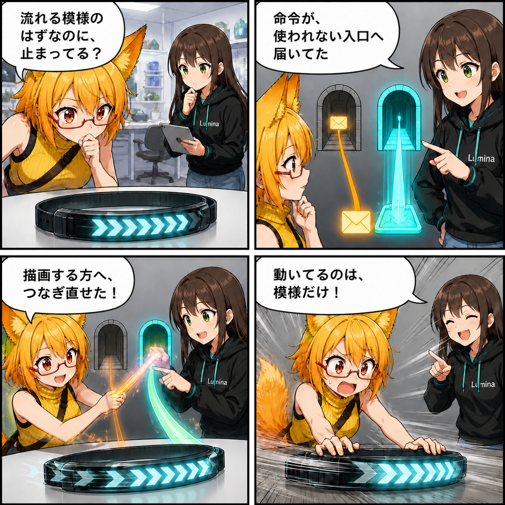

2026.09.02 / Development Log
模様だけが走り出す。VCIのUVスクロールをURPへつないだ日
VCIアイテムの「表面の模様を流す」アニメーションが、URP環境では止まって見える問題を修正しました。
Viewerの
main ブランチでは集計期間内に6件のコミットがありました。終了時点のHEADは 7b9e170（AI画像ポーズ推定を改善）、期間全体では61ファイル、5,392行追加、1,016行削除です。現在のViewer作業ツリーには13パスの未コミット変更がありますが、実装日を確定できないため本日の実績には含めていません。集計期間は 2026-09-01 03:00:00 JST から 2026-09-02 02:59:59 JST までです。
止まっていたのは、命令の届き先
VCIはテクスチャの表示位置を少しずつずらすことで、ベルトや光の筋などの模様が表面を流れているように見せられます。ところがURPへ復元されたマテリアルでは、互換用の _MainTex が存在していても、実際の描画は _BaseMap を参照する場合があります。
従来処理は _MainTex を先に選んでいたため、値そのものは更新されても、画面で使われない入口へ命令が届いていました。その結果、UVスクロールが止まって見えていたのです。
URPが読むテクスチャを優先
修正では、URPのメインテクスチャである _BaseMap を先に選び、存在しない場合だけVCI互換用の _MainTex へ戻る順序にしました。物体そのものを動かすのではなく、表面の模様だけが意図どおり流れます。
技術的なポイント
- VCIのUVスクロールをテクスチャオフセットとして反映
- URPマテリアルでは
_BaseMapを優先 _MainTexは従来形式向けのフォールバックとして維持- 変更範囲を
VciLuaRuntimeのプロパティ解決順へ限定
ほかにも進んだこと
- 最近の改修で増えた一時停止感を減らすため、実行時リソースの解放やキャッシュ処理を改善
- VR UIに戻り導線とパーツ一覧への遷移を追加
- AI画像ポーズで顔向き、横向きの体幹、重なった手足の前後推定を改善
- VAB/VBGの保存・読込を安定化し、VAB 4.6への表記更新とVSP経路の整理を実施
補足
今回の主修正はコミット 501ee214 の5行で、マテリアルの種類を増やしたのではなく、すでにあるプロパティの優先順位を直したものです。小さな差分でも、動く素材の見た目へ直接効く改善になりました。
4コマの裏話
スクロール命令が「使われていない入口」へ届いていた状況を、配達先の勘違いとして描きました。最後は小物が走り出したように見えてろひが慌てますが、実際に動いているのは表面の模様だけ、という知覚ギャグです。
まとめ
URPで実際に描画へ使われる _BaseMap を優先することで、VCIのUVスクロールが画面へ正しく反映されるようになりました。互換用 _MainTex へのフォールバックも残し、描画経路に合わせて安全に更新先を選びます。
本日のひとこと： 走ったのは物体じゃなくて、模様でした。